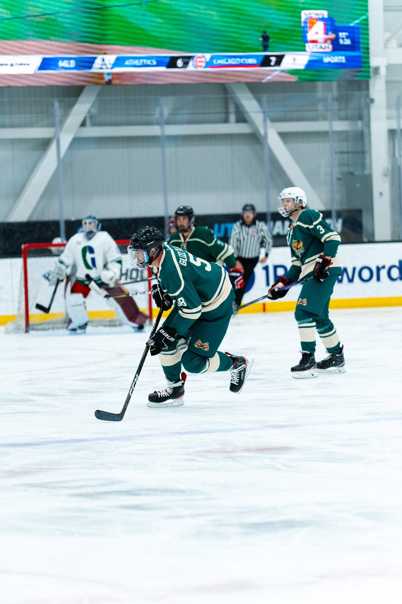
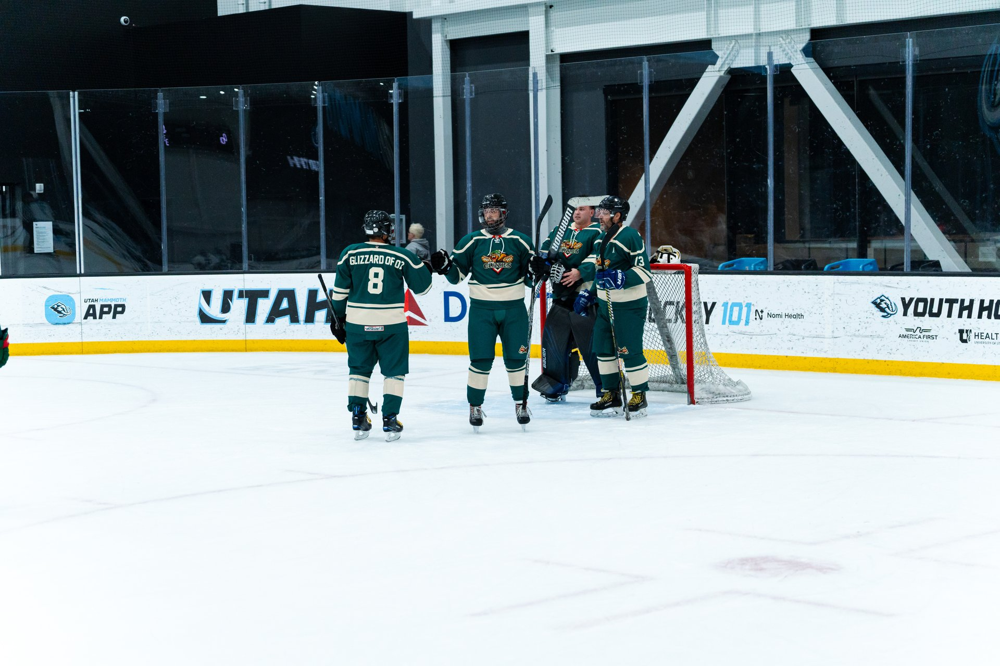

October 19, 2026 • 5 min read • By Utah Glizzies HC

Sharpening is the most underrated upgrade in beer league hockey. A $15 sharpen can feel better than a $300 stick. But how often is often enough? The honest answer from coaches, retailers and rink pros: it depends, and they don't all agree. Here's a straight answer you can actually use.
The Short Answer
10–15
Hours on ice between sharpens is a solid default for recreational adults
5–30
The range you'll see online, depending on skater weight, ice and style
Some guides say every 5 to 10 hours. Others say 20 to 30 for casual skaters. A sharpening-machine maker says every 3 to 4 hours, which is roughly the number you'd quote if you sold sharpening machines. For a beer leaguer playing one or two games a week, "every 10 to 15 hours" splits the difference. That's roughly every 8 to 12 games if you also take a few stick-and-puck sessions.
Signs Your Edges Are Done
You slide on stops and tight turns. If your hockey stop suddenly feels like a suggestion, check your edges first.
Crossovers feel mushy. The blade won't bite, so you wash out.
Visible nicks, rust or rounded edges. Not a good sign.
The fingernail test. Gently drag a fingernail across the edge. A sharp edge shaves a tiny curl; a dull one just slides.

Even the Glizzies can't blame bad edges for every missed shot. Most of them, though.
What Changes How Often You Need It
Heavier skaters, hard stoppers and players on rough or cold ice dull blades faster. Light, smooth skaters on good ice stretch it out. If you play outdoors or at crowded public sessions with scratched-up ice, plan on more frequent sharpens.
Dull skates make everything harder. Over-sharpened skates make you grab ice you didn't ask for. The goal is "bites when you want it to, glides when you don't."
Mistakes That Kill a Good Sharpen
Walking on concrete or rubber mats without guards. Use hard guards between the locker room and the ice, and soft soakers to dry blades afterward.
Leaving skates in the bag. Moisture means rust. Dry them out when you get home.
Sharpening too often. Every sharpen removes steel. Don't take a fresh grind before every game because you're feeling nervous.
Asking for "whatever." Tell the shop your weight, skill level and how you skate. They'll pick a hollow that matches.